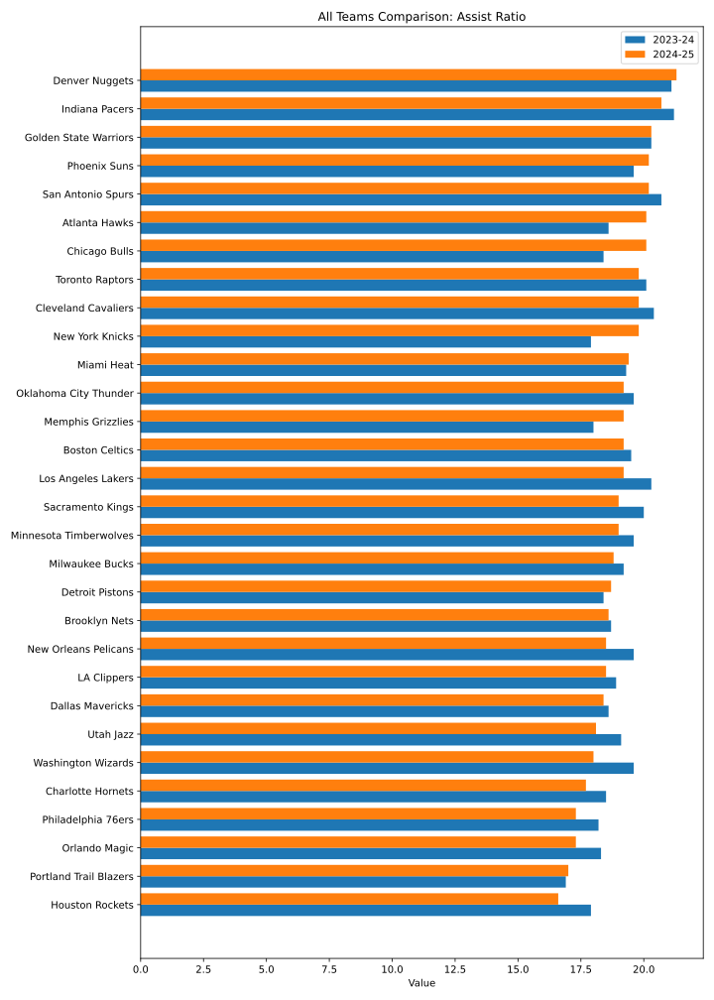

2024-25シーズンのスタッツを基準に降順でソートしています。
| Team | AST_s1 | AST_s2 |
|---|---|---|
| Denver Nuggets | 29.5 | 31.0 |
| Atlanta Hawks | 26.6 | 29.6 |
| Indiana Pacers | 30.8 | 29.2 |
| Golden State Warriors | 29.3 | 29.1 |
| Chicago Bulls | 25.0 | 29.1 |
| San Antonio Spurs | 29.9 | 28.6 |
| Toronto Raptors | 28.5 | 28.5 |
| Memphis Grizzlies | 24.7 | 28.4 |
| Cleveland Cavaliers | 28.0 | 28.1 |
| Phoenix Suns | 27.0 | 27.8 |
| New York Knicks | 24.4 | 27.5 |
| Oklahoma City Thunder | 27.1 | 26.9 |
| Sacramento Kings | 28.3 | 26.5 |
| Miami Heat | 25.8 | 26.4 |
| Detroit Pistons | 25.5 | 26.4 |
| Minnesota Timberwolves | 26.6 | 26.1 |
| Boston Celtics | 26.9 | 26.1 |
| Los Angeles Lakers | 28.5 | 26.0 |
| New Orleans Pelicans | 27.0 | 25.8 |
| Milwaukee Bucks | 26.5 | 25.5 |
| Utah Jazz | 27.2 | 25.5 |
| Dallas Mavericks | 25.7 | 25.2 |
| LA Clippers | 25.6 | 25.2 |
| Brooklyn Nets | 25.6 | 25.2 |
| Washington Wizards | 27.9 | 25.1 |
| Charlotte Hornets | 24.8 | 24.3 |
| Portland Trail Blazers | 23.1 | 23.8 |
| Houston Rockets | 24.8 | 23.3 |
| Philadelphia 76ers | 24.9 | 23.2 |
| Orlando Magic | 24.7 | 23.0 |